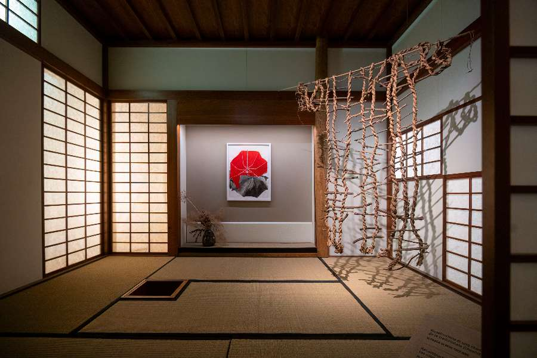
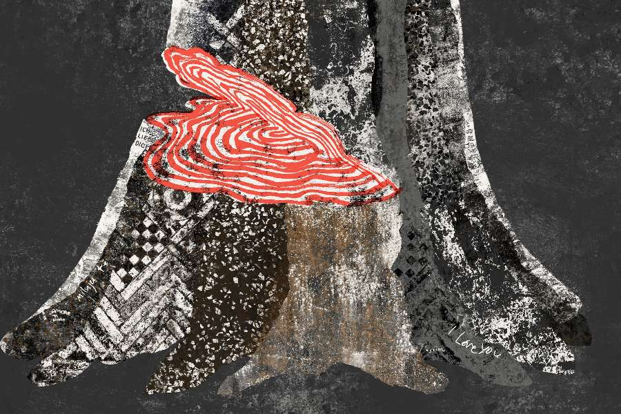
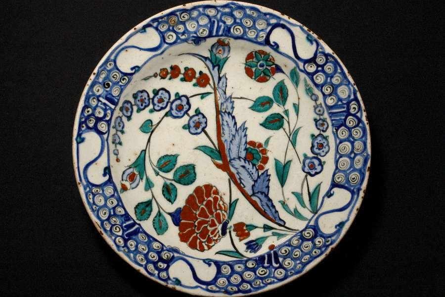
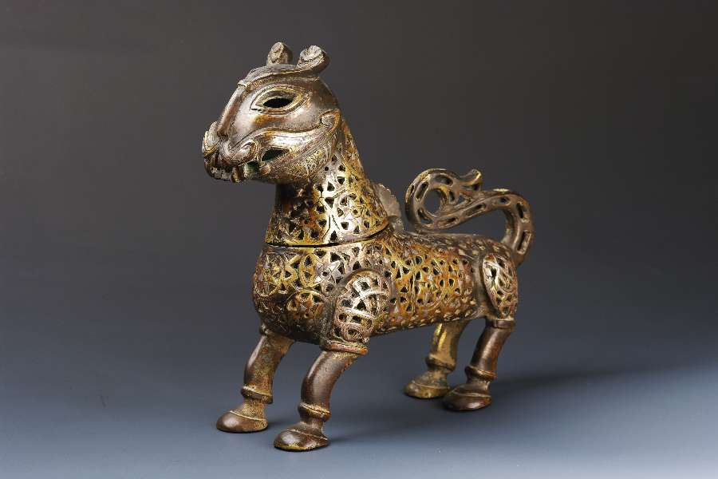
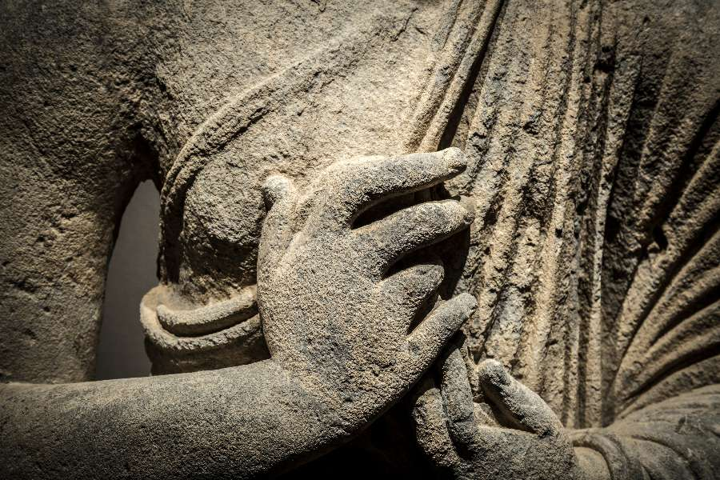
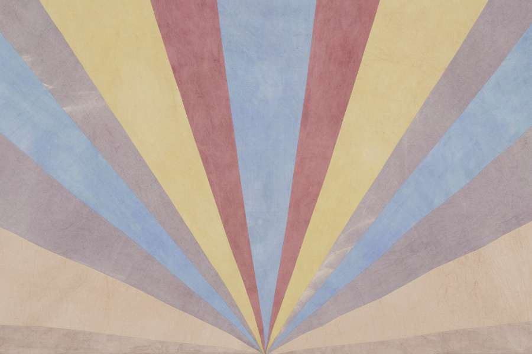
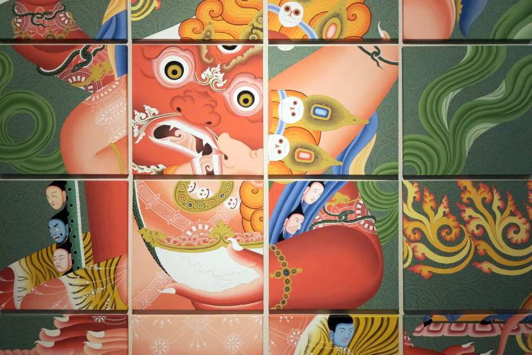
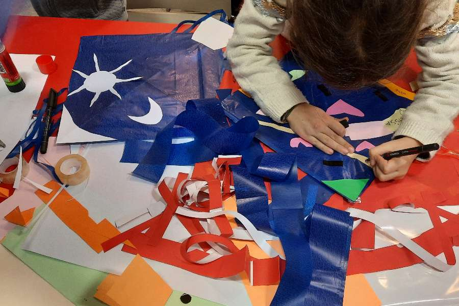

Contemporary Monogatari: nuove narrazioni giapponesi

Animo Chen | Una breve elegia
Declinazioni contemporanee

PROFUMI - FIORI - Fiori dipinti, incisi, intessuti
PROFUMI - LEGNO - Sotto l'oro, il cipresso
Arte e tè in Oriente

PROFUMI - ORIENTE - Le spezie, l'incenso e altre strade

Visual Vernacular

Trad u/i zioni d'Eurasia

Evolving soundscapes

Tsherin Sherpa
